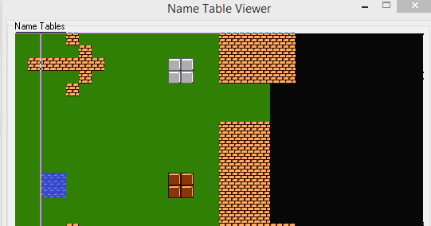
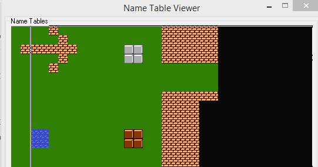
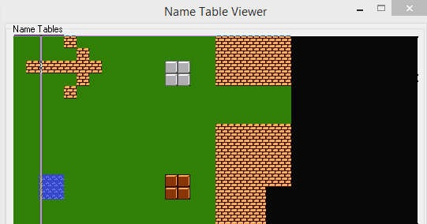
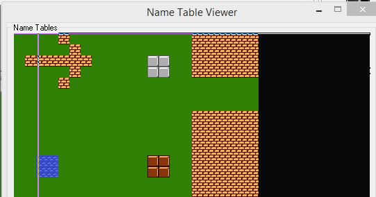
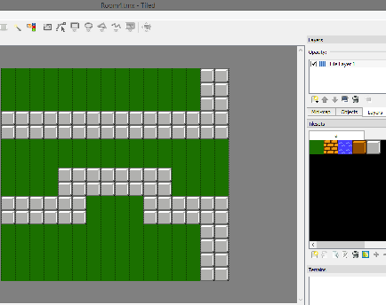
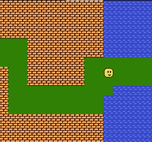

12、向右滚动
在NMI期间进行更新的自动vram缓冲系统，实用化的例子。
屏幕滚动期间，ppu会大量的进行更新操作，因此需要一个自动更新的系统来完成这个操作。
我们通过更新不可见的nametable，让用户对不知道我们在不可见区域进行了更新。每次只更新一点儿（不能太多，否则系统会超负荷）。当我们向右滚动的时候，我们一帧一帧的看，我每帧执行2次buffer_4_mt() 每帧更新8个块。




我不想一帧中做太多的ppu更新，所以我把他分到4个帧中更新。
Tiled中的关卡设计。

我制作了5个room地图，向右滚动后，它会自动更新到屏幕右侧，您可以看到。它像以前一样从碰撞图中读取数据，但我必须在移动时重新加载新地图。
现在有2个16×15 metatile的碰撞图（每个240字节）。每次你进入另一个房间时，它会在屏幕右侧加载下一个碰撞图。我们可以直接从ROM中读取冲突，但在RAM中使用它的优势意味着它是可破坏/可修改的。就像马里奥打破一个街区，或者当林克（塞尔达）将一个街区推到一边时。
我仍然一次将房间设为1个房间（参见上一个页面）。使用py脚本将Tiled .csv文件处理为ac数组。我将它们导入代码，并添加了一个指向这些数组的指针数组。
请注意，如果展开此选项，则还需要更改最大滚动常量。
每帧1像素看起来有点慢，所以我修改了所有的移动和碰撞代码来处理大于1像素的可变速度，以及大于1像素的碰撞喷射。现在似乎工作正常，但我没有测试每帧超过2个像素的速度。
它也适用于房间边缘，这是一个棘手的部分，但这使数学变得复杂。当它检查4个点时，每个点可能在不同的房间，所以我考虑到了这一点。bg_collision（）函数是通用的，因此当我们稍后添加它们时，它也适用于检查碰撞的敌方对象。

https://github.com/nesdoug/15_Scroll_R/blob/master/scroll_r.c
https://github.com/nesdoug/15_Scroll_R